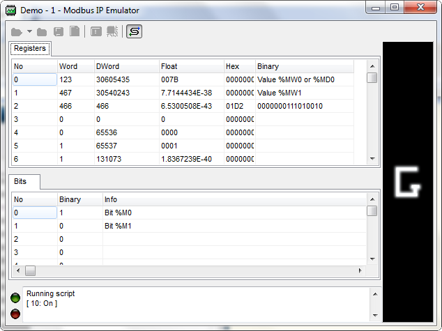

To run the emulator click on the following icon .
The program open the configured ip port (normaly 502) and wait for connections. Do not
forget to configure your firewall.
If the serial port is activated, all requests from it will be forwarded to the emulator.

If you right click on the log zone, you can view all requests received by the emulator.